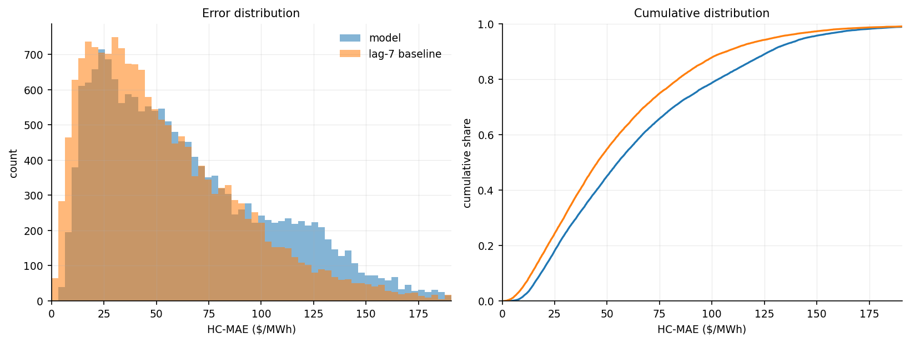
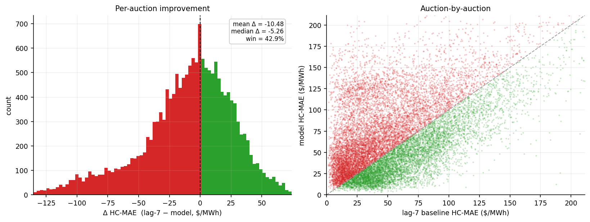
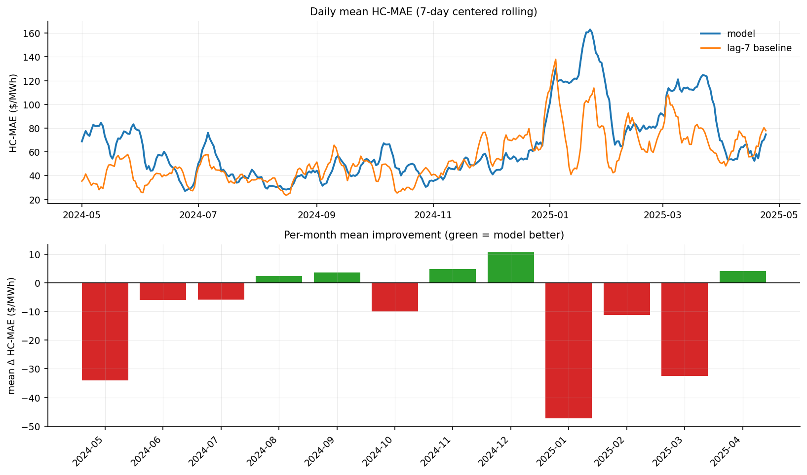
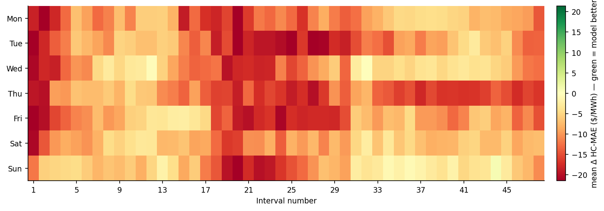
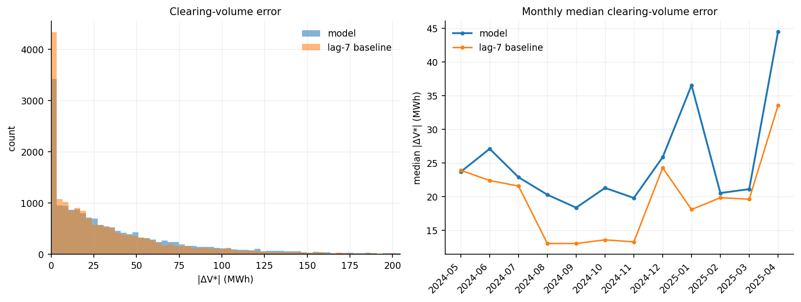
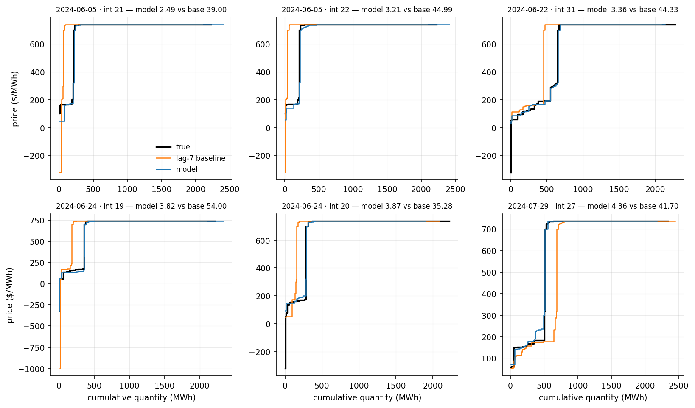
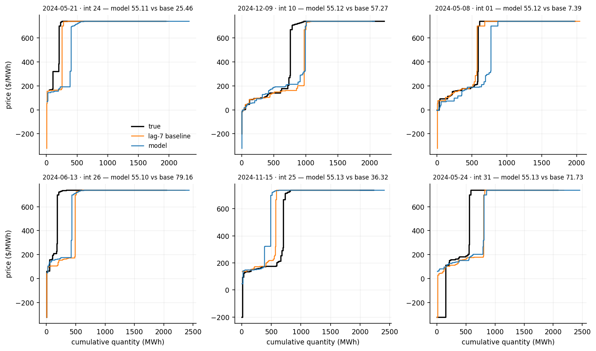
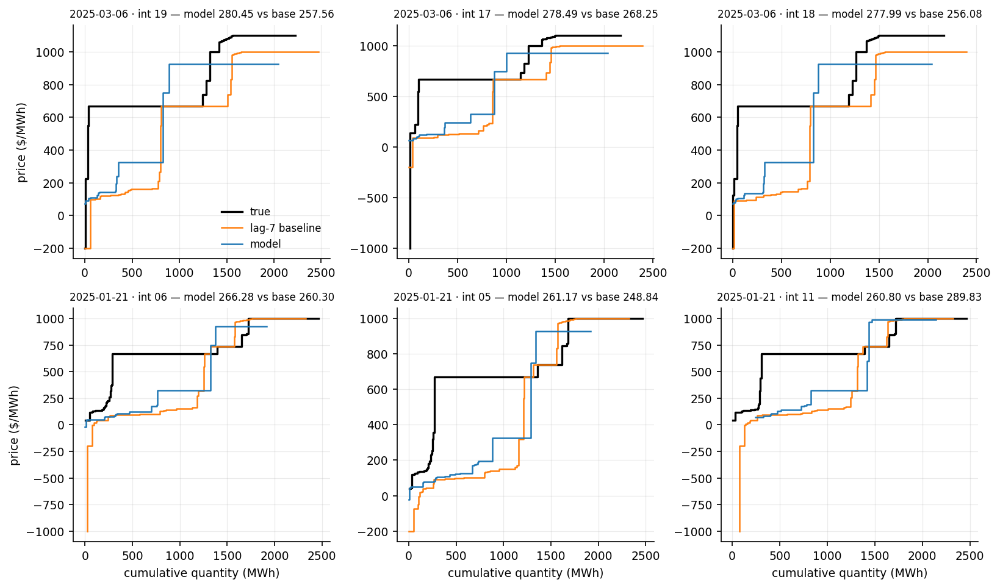

7-day-ahead · test 2024-05-01 → 2025-04-24 · 17,232 auctions · reference: lag-7 baseline
| This model | lag-7 baseline | |
|---|---|---|
| Mean HC-MAE ($/MWh) | 65.31 | 54.83 |
| Median HC-MAE ($/MWh) | 55.11 | 45.35 |
| Win % vs lag-7 | 42.9% | - |
| Mean |ΔV*| (MWh) | 38.69 | 33.66 |
| Median |ΔV*| (MWh) | 24.02 | 18.75 |
| Mean |ΔP*| ($/MWh) | 29.79 | 31.48 |
| Median |ΔP*| ($/MWh) | 3.00 | 2.06 |




The true demand curve is crossed with the predicted supply curve, and the error is how far this moves the clearing point (V*, P*).
| This model | lag-7 baseline | |
|---|---|---|
| Mean |ΔV*| (MWh) | 38.69 | 33.66 |
| Median |ΔV*| (MWh) | 24.02 | 18.75 |
| Win % on |ΔV*| | 37.3% | - |
| Mean |ΔP*| ($/MWh) | 29.79 | 31.48 |
| Median |ΔP*| ($/MWh) | 3.00 | 2.06 |
A few price-floor auctions make the mean of |ΔP*| large, so the median is the summary.



